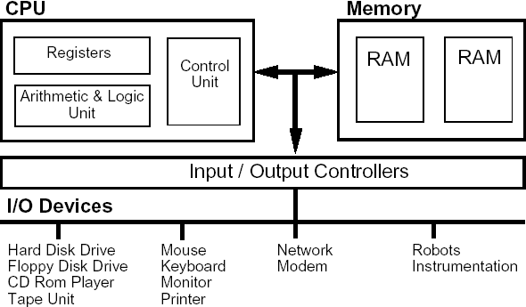

Introduction to Computer?
Created by NTUgEEkComputer Architecture
How computer store data
- 0: Low voltage
- 1: High voltage
沒有別的了...
So everything is represent in Binary!
Numbers in Binary
\( 11 = 8 + 2 + 1 = 2^3 + 2^1 + 2^0 = (1011)_2 \)Bit
1 Byte = 8 Bit
1 KB = \(2^{10}\) Byte ≈ \(10^3\) Byte
1 MB = \(2^{10}\) KB ≈ \(10^3\) KB...
Integer in Computer
The memory in computer is limited, so we use only a fixed number of bit to represent a number.
For example, int in c++ is 4 Bytes,
char is 1 Byte.
this limited the number of distinct numbers to \(2^{32}\) and \(2^8\)
Arithmetics
In unsigned char, all the numbers that
could be represent are
- 0: \( (00000000)_2 \)
- 1: \( (00000001)_2 \)
- 2: \( (00000010)_2 \)
- ...
- 255: \( (11111111)_2 \)
Arithmetics
\( 37 + 52 = 89 \), fine.
but what about \( 255 + 1 \) ?
Answer: Overflow! \(255 + 1 = 256 = (100000000)_2 \).
Only the last 8 bit would be preserved.
So it would compute \( 255 + 1 = 0 \)!
Modular
\( a \equiv b \pmod{m} \Leftrightarrow m \mid a - b \)
Ex: \( 25 \equiv 9 \equiv -7 \pmod{16} \)
Some useful formula
- \( a + b \equiv a \bmod{m} + b \bmod{m} \)
- \( a b \equiv (a \bmod{m}) (b \bmod{m}) \)
Modular
Arithmetic in a \( n \) bytes binary number system could be seen as doing arithmetics in modular \( 2^n \)
Negative
In unsigned, we choose
\( 0, 1, 2, \cdots, 2^{n-1} - 1, \color{red}{2^{n-1}, \cdots, 2^n - 2, 2^n - 1 }\).
But notice that \( 2^{n-1} \equiv -2^{n-1}, 2^{n-1}+1 \equiv -2^{n-1}+1, \cdots \pmod{2^n} \)
So we could also choose \( 0, 1, 2, \cdots, 2^{n-1} - 1, \color{red}{-2^{n-1}, \cdots, -2, -1 }\).
好字！ We have negative numbers now. This is called the two's complement representation
Negative
Ex: \( -3 \equiv 253 \pmod{2^8} \), so -3 would be represent by \( (11111101)_2 \).
Fomula: Flip and add one. \( (00000011)_2 \rightarrow (11111100)_2 \rightarrow (11111101)_2 \).
Some bit operations.
&: And.1010 & 1100 = 1000|: Or.1010 & 1100 = 1110^: Xor.1010 & 1100 = 0110~: Flip.~1010 = 0101
Ex:
-x = ~x + 1
Floating Point

\( \pm a \cdot 2^b \)
Some special numbers, inf, nan...
Linux Shell Basic
command [-flag1] [-flag2] ... [target]
# Examples:
tar -cvf archive.tar homework.pdf
man: Manual
Hard disk
/dev/sdX
Partition table: MBR, GPT
Booting
BIOS(MBR) or EFI(GPT)
Boot loader (Grub)
File System
- Fat32
- NTFS
- ext4
Directory Tree

Ex: /home/patric/school
Important: . and ..
Mounting
# mount device dir
mount /dev/sda /mnt
Some Commands
cd, lsmv, cp, rm, touch, mkdir, rmdir
Permission
$ ls -al
total 668
drwx------ 73 meteor users 4096 10月 24 23:58 .
drwxr-xr-x 5 root root 4096 10月 15 21:44 ..
drwxr-xr-x 3 meteor users 4096 10月 20 21:05 abs
drwx------ 3 meteor users 4096 5月 20 11:17 .adobe
Some Directory
$ ls /
boot dev etc home mnt opt proc root run srv sys tmp usr var
Network
Network
Each one has a unique IP.
- ipv4: 192.168.1.101
- ipv6: 08:62:66:c7:e2:79
Network commands
$ ip link
$ ip addr
$ ip rou
Setting comand: netctl
DNS
Convert human readable name (ex: ntuee.org) to ip (ex: 1.23.45.67)
config in /etc/resolv.conf).
Subnet
ipv4, not enough :( ...
Subnet example: 123.45.67.89/24).
Mask: 255.255.255.0).
DHCP
Dynamic Host Configuration Protocol
$ systemctl start dhcpcd
Port
Different type of application uses different port
Examples:
- 80: Browser
- 22: SSH
SSH
Really convenient command
# usage: ssh [username]@[hostname] -p [port]
# example
$ ssh bbsu@ptt.cc
How program run
CPU Instructions
Operating System
- Process management, tasking.
- Memory management
- System call
- ...
Programming cycle
Build, Makefile
CC=gcc
CFLAGS=-I.
DEPS = hellomake.h
.PHONY: main clean
%.o: %.c $(DEPS)
$(CC) -c -o $@ $< $(CFLAGS)
hellomake: hellomake.o hellofunc.o
gcc -o hellomake hellomake.o hellofunc.o -I.
Usually make and make install are provided
Debuging
- Printing
- Log
- Tools: gdb ...
Security
Bugs causes security issues
- Buffer overflow
- SQL injection
SELECT * FROM users WHERE (name = '" + userName + "') and (pw = '"+ passWord +"')
Programming with Other
Main issue: multiple programmer modifying different codes...
Version Control
- Dropbox?
- Subversion
- Git